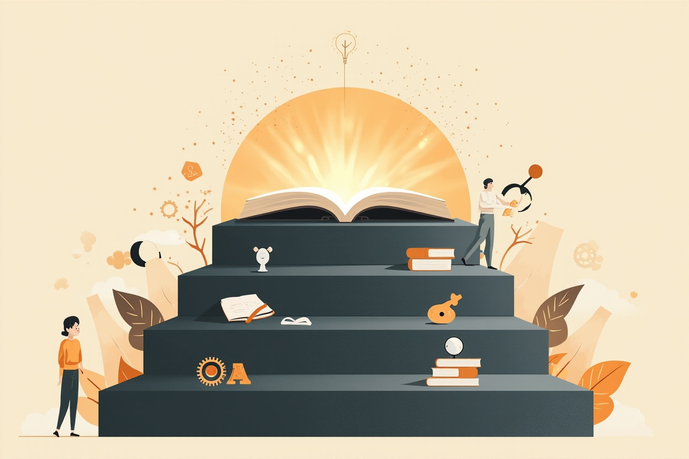

本章目标（约25分钟）：学完你能——①说出四层阅读法的层级关系（基础→检视→分析→主题）以及为什么高层级包含低层级；②用检视阅读十五分钟给一本新书做「体检」，判断它值不值得精读；③复述分析阅读的三个阶段（架构-诠释-评论）与「主动阅读四问」；④说清主题阅读五步骤，并解释为什么它是「最主动也最困难」的阅读层次；⑤识别对这本书的至少两条常见误读（包括「读法越多越好」与「所有书都值得分析阅读」）；⑥启动第九节为你设计的主题阅读项目——用本专栏二十本书做一次真枪实弹的主题阅读，配一张一年认知阅读计划模板。
怎么用本章：这是收官章，有两种用法。快用法：直接跳到第九节「你的第一个主题阅读项目」，拿二十本书当项目库，按模板启动一年计划——前面十九本书从此有了组织方式。全用法：按顺序读完，把四层阅读法本身学扎实（它值得学扎实：这本书出版于 1940 年，八十六年后仍是阅读方法论的默认参照系）。无论哪种用法，都建议回看第16章《认知天性》——两章合并才是完整闭环：本章管「怎么把书读进来」，第16章管「怎么把读进来的东西留在脑子里、迁移到行动上」。
一、这本书讲什么：一本关于「读书」的元书
1940 年出版，八十六年后仍是阅读方法论的默认起点
阿德勒、范多伦与「大观念」传统
《如何阅读一本书》（How to Read a Book）初版由莫提默·阿德勒（Mortimer J. Adler）写于 1940 年，1972 年阿德勒与查尔斯·范多伦（Charles Van Doren）大幅改写再版，即今天通行的版本；中文版常见由商务印书馆出版（以版权页为准）。阿德勒不是普通的写作技巧讲师：他是芝加哥大学哲学教授、「大观念」（Great Books）教育运动的核心推动者——这个运动主张普通人通过直接阅读西方经典的原文来获得人文教育，配套产物包括《大英百科》的 Great Books 系列与《西方世界的伟大著作》索引工具 Syntopicon（把两千年经典里的重大观念做成主题索引，让读者能按「正义」「幸福」「自由」这样的观念横向检索）。《如何阅读一本书》正是这套运动的方法配套：要读经典，先得会读——会读不是天赋，是可以训练的分层技术。
这本书的特殊地位在于它处理的是一个「元问题」：其他书教你知识，这本书教你获取知识的操作系统。它的核心主张只有一句：阅读是主动的，主动性分层次，每个层次有明确的规则可以练习。放在本专栏的收官位置，这个安排是刻意的——前十九章我们一直在「用书」，每章拆一本书的思想内核；第二十章我们「用读书这件事本身」，把读法从隐性习惯升级为显性技术。读完本章，前面十九章的每一章（尤其是每章的「怎么读这本书」区块）都可以被重新理解：那些路线设计，其实都是四层阅读法在不同书籍类型上的具体应用。
为什么放在收官：从「读书」到「会读书」
一个值得先摆上桌的事实：这本书 1940 年出版时的核心论点——多数人只受过基础阅读训练、从未学过分析阅读与主题阅读——在近九十年后不但没过时，反而更尖锐了。原因有三。其一，信息环境恶化了主动阅读。1940 年阿德勒抱怨的是收音机对阅读时间的挤占，今天短视频与推送流对「深度注意力」的侵蚀是同一问题的极端版本——被动接收内容的默认习惯，恰恰是分析阅读的最大敌人。其二，「读得多」与「读得懂」的差距被放大。信息获取成本趋近于零之后，稀缺的不再是「能读到什么」，而是「能不能消化」——检视阅读（快速判断一本书值不值得投入）在信息过载时代从「可选技巧」变成了「生存技能」。其三，主题阅读有了新工具但方法论不变。搜索与推荐算法能帮你聚合材料，但「围绕一个问题让多本书对话、建立自己的判断」这件事没有任何工具能代劳——这仍然是人脑的工作。
所以收官章的任务很明确：把「读过二十本书」升级为「会用一套方法读任何书」。本专栏二十本书里，有教科书（《思考，快与慢》）、有畅销书（《人类简史》）、有工具书（《金字塔原理》）、有争议书（《原则》）——四种书对应四种读法，这个匹配过程就是四层阅读法的实战。第九节会把这件事做成一个可执行的项目模板。
二、核心概念拆解：四层阅读法
层级递进、高层包含低层：这是全书的骨架
第一层与第二层：基础阅读、检视阅读
第一层：基础阅读（elementary reading）。识字、理解句子字面意思——「这句话在说什么」。多数人在小学完成这一层训练后，阅读能力就停止升级了；书中的判断很尖锐：能读懂字面不等于会读书。第二层：检视阅读（inspectional reading）。在有限时间内（书中建议十五分钟到一小时）抓住一本书的骨架，回答「这本书在谈什么、结构如何、值不值得继续读」。它有两个子层次：有系统的略读——看书名页与序言、研究目录（目录是作者的骨架图，多数人从不读）、抽查索引里出现频率最高的关键词对应的段落、随机翻读几段、最后读结尾（作者常在结尾总结主张）；粗浅的阅读——通读一遍全书，遇到不懂的地方不停下来查证，先完成整体再回头补细节。
检视阅读的认知价值被严重低估。它本质上是一个投资前的尽职调查：一本书值不值得投入八到十小时精读，十五分钟的体检就能给出八成把握的答案。对照本专栏：每章「怎么读这本书」区块给出的「难度分级+路线+耗时」，就是替读者做了检视阅读的功课——但你自己动手做一遍，收获完全不同：略读目录时你训练的是结构感，抽查索引时你练的是抓关键词的嗅觉，这两种能力只能亲手练出来。一个立刻可用的习惯：任何新书到手，先做十五分钟检视再决定精读、略读还是放弃——「放弃」是检视阅读最重要的合法输出，多数人从不行使这个权利。
第三层：分析阅读——三个阶段与主动四问
第三层：分析阅读（analytical reading）是全书篇幅最大的部分，规则化程度最高，分三个阶段。第一阶段：找出一本书在谈什么——依照书的种类与主题分类（规则一）；用最简短的文字说出整本书在谈什么（规则二）；按顺序与关系列出全书大纲（规则三）；找出作者要解决的问题（规则四）。第二阶段：诠释一本书的内容——找出重要单字，透过它们与作者达成共识（规则五：词义）；由最重要的句子抓住作者的主旨（规则六：主旨）；从相关文句的关联中架构出基本论述（规则七：论述）；确定作者解决了哪些问题、哪些没解决（规则八）。第三阶段：像是沟通知识一样地评论一本书——在说出「我同意」「我不同意」「我暂缓评论」之前，必须能肯定地说「我读懂了」（规则九）；不同意时要有理有据，区分「知识不足」「知识错误」「不合逻辑」与「分析不完整」四种批评类型（规则十、十一）。
第三阶段藏着一个经常被跳过的纪律：评论的前提是读懂。书中的表述是——除非你已经完成了前两个阶段（架构+诠释），否则没有资格说「我不同意」。这条规则放在今天的网络环境里几乎是异类：大量争论发生在双方都没读懂对方文本的状态下。对照第18章《学会提问》的十问——十问其实就是一套压缩版的分析阅读规则，把「词义-主旨-论述-批评」四步翻译成十个可以直接落笔的问题；两章的工具可以互换使用：读论证严密的学术书用分析阅读三阶段，读观点密度高的畅销书用十问，读两者混合的（比如上一章的《人类简史》）叠加使用。另外注意第四节的「主动阅读四问」与三阶段的关系：四问是贯穿所有层次的提问框架（这本书在谈什么、细节说了什么、说得有道理吗、跟我有什么关系），三阶段是分析阅读层次上对前三个问题的规则化展开。
第四层：主题阅读——让多本书围绕你的问题对话
第四层：主题阅读（syntopical reading）是全书的顶点，也是本专栏二十本书的「组织方法」。定义：围绕一个你关心的问题（而不是一本书），同时读多本书，让它们在同一个问题框架下对话。书中给出五步骤：①找到相关章节——用检视阅读快速筛出每本书中与你的主题相关的部分（注意：是为你的主题服务，不是为书服务）；②带引号中立化术语——不同作者对同一概念用不同词汇，你要建立一套中立的术语体系，强迫所有作者在你的框架里发言；③厘清问题——列出你的问题清单，并识别哪些问题各家有共识、哪些存在分歧；④界定议题——把分歧整理成明确的对立议题（比如「直觉到底可不可靠」，让不同立场的作者各执一端）；⑤分析讨论——按问题顺序呈现各家答案与你的分析，目标是「理解问题的全貌」而非「站队某个作者」。
主题阅读最反直觉的一点：你从「书的读者」变成了「讨论的主持人」。前三层里书是主体、你是接收者；主题阅读里你的问题是主体，书是被传唤的证人。这直接对应第13章《模型思维》的核心主张——多模型思维的本质就是让不同框架针对同一问题对话，拒绝单模型霸权；主题阅读是多模型思维在读书上的实现形式。它也是本专栏设计逻辑的自白：二十章看起来是「一本书一课」，但每章的「认知升级点对照表」「交叉引用」和「延伸书单」都在偷偷做同一件事——把卡尼曼、塔勒布、斯科特·佩奇、赫拉利们放进同一个对话场。第九节把这个对话场交给你，由你主持。
四层之间的关系：包含而非替代
必须澄清一个常见误解：四层不是「升级后抛弃低层」的替代关系，而是高层包含低层的叠加关系——做主题阅读时，你仍然在对每本相关的书做检视阅读（找相关章节）和分析阅读的片段（诠释各家论述）。书中反复强调的另一组关系是「阅读的主动性光谱」：从最被动的接收（基础阅读）到最主动的建构（主题阅读），层级越高、读者投入的心智劳动越多、回报的理解深度也越大。与之配套的是「为获得资讯而读」与「为增进理解而读」的区分——前者读完你只是知道了更多事实（书的难度低于你），后者读完你的理解力本身被撑大了一档（书的难度高于你，你通过努力攀爬上去）。四层阅读法真正瞄准的是后者：只有「难度高于你现有水平」的书才值得动用分析阅读；资讯型内容用检视阅读甚至不读都无妨。

插画 · AI 生成 · 四层阅读法的阶梯结构
把这个区分用到本专栏：二十本书里，哪些是「难度高于你、值得分析阅读」的（多数经典教科书如《思考，快与慢》《穷查理宝典》），哪些是「叙事流畅、检视+重点章精读」即可的（如《人类简史》），哪些是「工具书、按需查用」的（如《金字塔原理》）——这个分类动作本身，就是四层阅读法的第一次实战。第九节的项目模板里，这一步叫「给书库分层」。